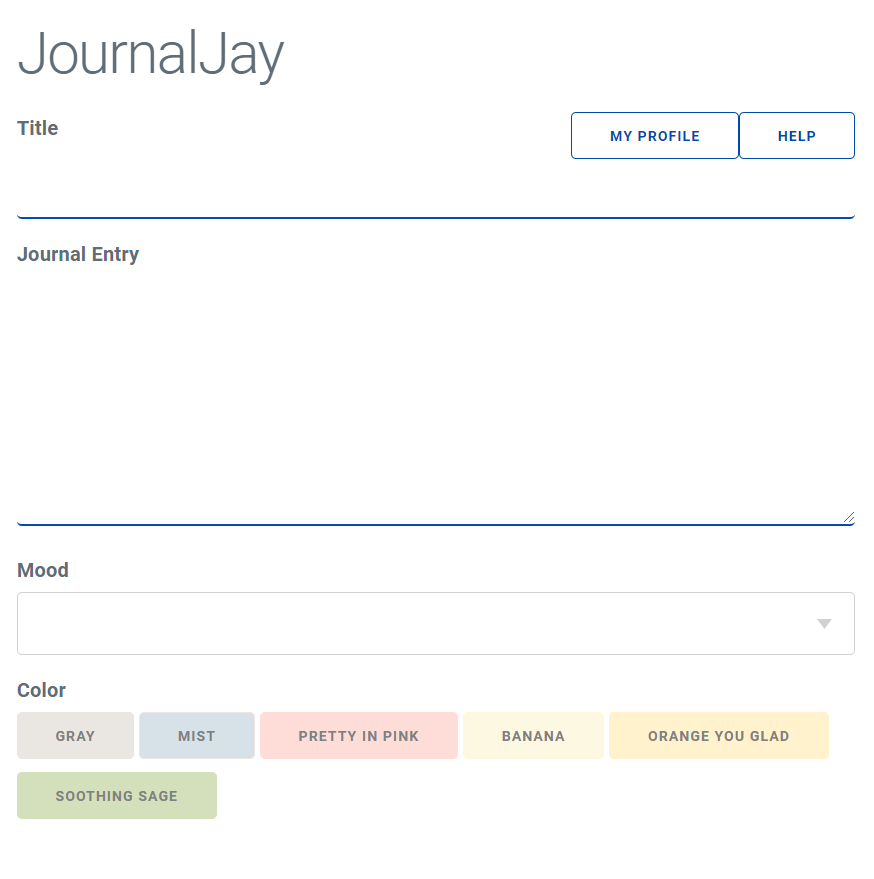

This is JournalJay, a web based journaling site where anyone can journal anytime and anywhere! You can create and customize entries with colors and emojis.
The main page of JournalJay will have a title field and entry field. Here is what it will look like.
Input the title of your journal entry in the "Title" field and put the content of your entry in the "Journal Entry" box.
Choose an emoji to show how you are feeling right now! If you do not want an emoji, you can leave this field blank.
Choose a color from the 6 presets as shown. The entry box will show the different colors you can choose from!
Click "Save Entry" to save the entry or "Cancel" to cancel.
If you saved the entry, you will see your entry on the main page. Click on your entry to review it. Keep in mind, you can only make one journal entry a day.
If you need additional assistance, contact us at JaySupport@journaljay.com